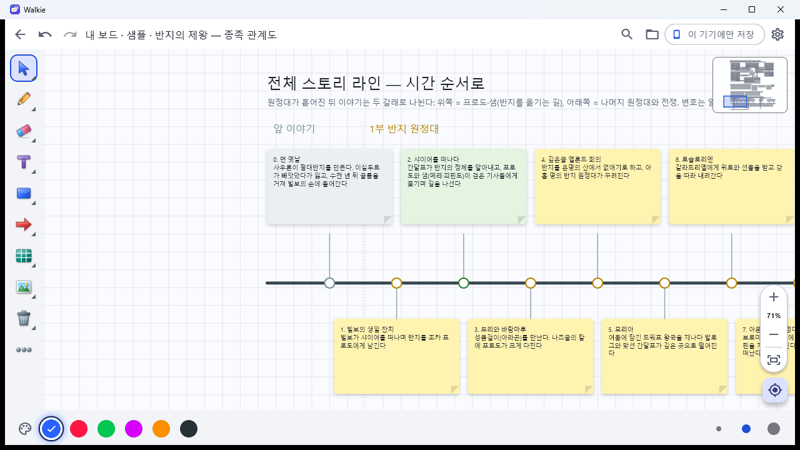
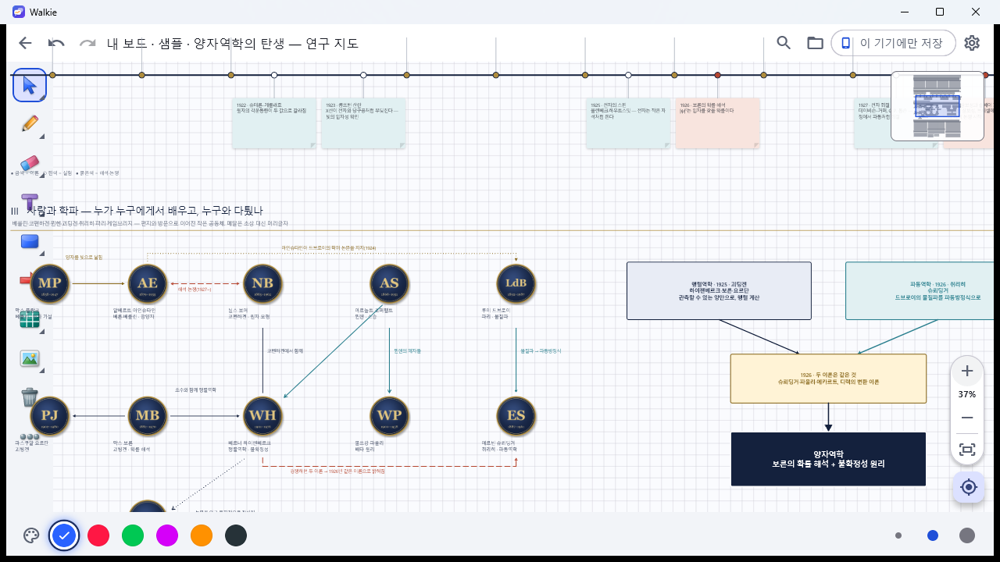
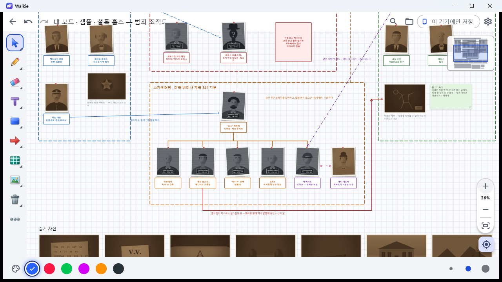
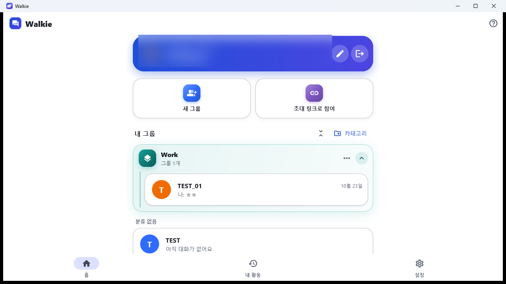

초대한 사람끼리만 쓰는 그룹 통화 · 채팅 · 함께 그리는 보드. 내용은 서버에 저장하지 않아요.
무료 베타2026년 말까지 모든 기능 무료PC + 안드로이드통화를 시작하면 멤버를 불러요. 입장은 각자 직접 눌러야 해요. 녹음은 하지 않아요.
펜·도형·화살표·포스트잇·표·목록·사진·파일·유튜브까지 한 판에. 실시간으로 함께 고쳐요.
대화·보드·파일은 서버에 남지 않아요. 멤버 기기끼리 암호화해 주고받아요.
그룹이 많아도 카테고리로 묶고 접어 깔끔하게 정리해요.




설치 프로그램을 실행하면 관리자 권한 없이 설치돼요. 새 버전은 자동으로 업데이트돼요.
WalkieSetup.exe설치 없이 쓰기: 휴대용 압축(zip)
"Windows의 PC 보호" 창이 뜨면 추가 정보 → 실행을 눌러 주세요(코드 서명 전인 개인 개발 앱이라 뜨는 안내예요).
앱 마켓이 아닌 설치 파일(APK)로 제공해요. 폰 카메라로 QR을 찍어 받으세요.
설치할 때 "출처를 알 수 없는 앱 설치"를 허용해 주세요. 폰 앱은 자동 업데이트가 없어요 — 새 APK를 같은 방법으로 설치하면 돼요.
모든 판과 바뀐 내용: 릴리스 목록
각 릴리스의 SHA256SUMS.txt에 파일마다 SHA-256이 있고, 이 목록은 아래 공개키(Ed25519)로 서명되어 SHA256SUMS.txt.sig로 함께 올라가요. 같은 지문은 앱의 설정 › 도움말 · 정보 › 배포 파일 확인에도 있어요.
서명 공개키: 8470ef683f68386c1689af9a569e6152a41d43e34aaa8a109a09fc7a188f34c0
APK 서명 인증서 SHA-256: B3:76:F4:8D:F0:A7:F3:95:62:BF:AC:34:CC:B6:BF:94:AC:26:6B:D2:0D:A7:36:F4:34:C3:F5:5F:3E:6F:6C:79
Windows에서 해시 보기: PowerShell에서 Get-FileHash .\WalkieSetup.exe